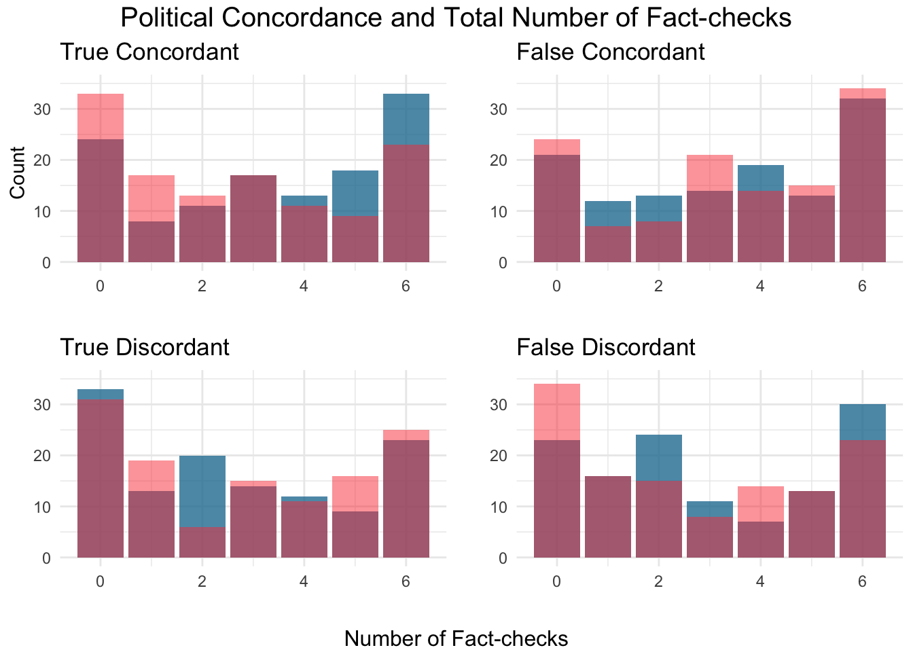
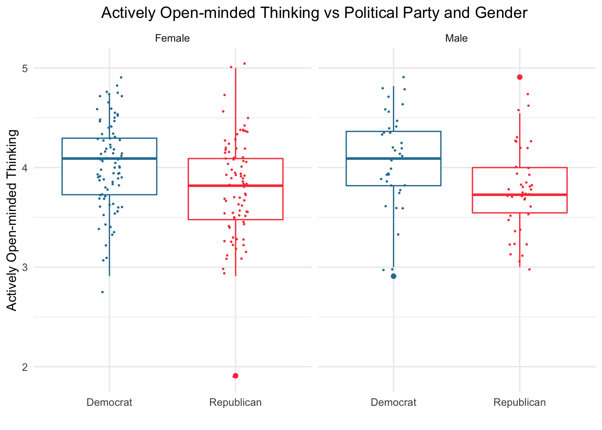
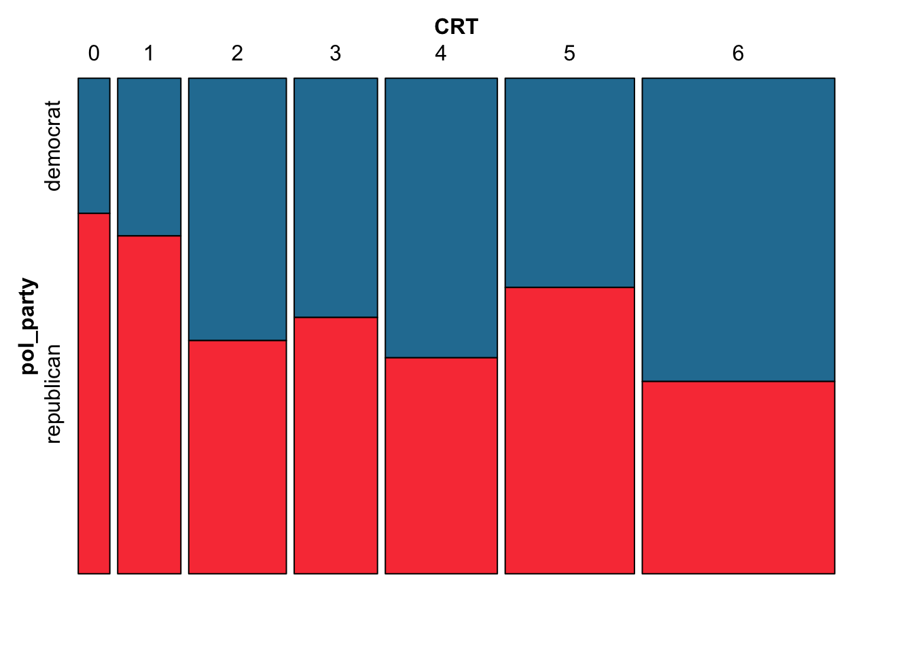
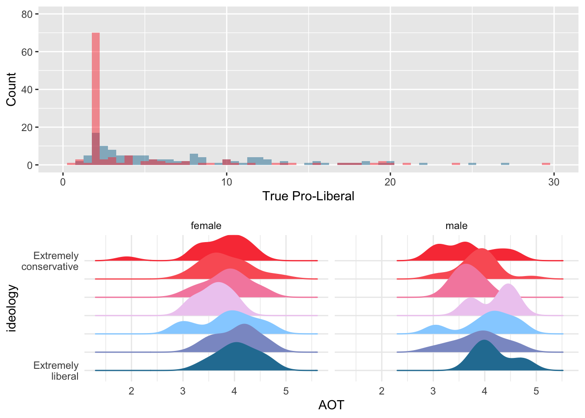

Chapter 4 Results
4.1 Overview of respondents
The charts above show that the sample is relatively balanced in terms of their political affiliation and ideology. About half of the sample identifies themselves as Democrats, half as Republicans. As for ideology, despite the difference in the extremes (the number of extremely liberals is about double that of extremely conservatives), the total numbers are rather similar at each side (124 to the side of liberals; 123 to the side of conservatives). As for gender, we can see a large gap between female and male respondents (166 x 178, respectively). Respondents who chose “other” or opted to not disclose their genders account for a total of 3 individuals, and are not shown in this chart (even if those categories were “topcoded”, the height of the bars would be very low). The researchers also achieved an important symmetry between the two experimental conditions of fact-checking: 125 were assigned to “easy;” 122 to “difficult.”
4.2 Political Concordance vs Number of Fact-checks

The chart above shows the amount of fact-checks conducted by individuals according to their political affiliation: Republicans are in red, Democrats are in blue, and the colors have a level of transparency (alpha). Each of the individual charts refers to concordance or discordance between the information presented and the individual’s political perspective. Therefore, “True concordant” refers to information that is true and aligned with the respondent’s political perspective; “False concordant” refers to information that is false and concordant with the individual’s political perspective; the same logic applies to the other two categories. Some of the charts show interesting patterns. For example, the top-right plot (True concordant) shows an intriguing symmetry. The number of Republicans who perform 0 fact check on true concordant news is higher than that of Democrats. The same is true for 1 and 2 fact-checks. The numbers are very similar on the other side of the chart, but now Democrats outnumber Republicans for 4, 5, and 6 fact-checks. An almost opposite pattern arises for False discordant headlines, although with less stark symmetry. Here, Republicans are also the most representative group performing 0 fact-checks, and Democrats are majority among those performing 6 fact-checks. The number of individuals are the same across political parties for 1 and 5 fact-checks, and Democrats are majority for 2 and 3 fact-checks.
4.3 Total Number of Fact Checks

The chart above shows that there are no salient trends in terms of fact-checking when comparing ideologies. Different features have been tested for the visualization total fact-checking, and no salient pattern has been identified. For example, we attempted to include gender as a faceting dimension, and the chart did not reveal any relevant patterns, as seen below.

4.4 Actively Open-minded Thinking and Political Affiliation

The boxplots show the score for actively open-minded thinking – “a general prescriptive theory that defines a standard or norm for all thinking, with emphasis on its role in the judgment of the thinking of others, and in maintaining appropriate confidence” (Baron, 2019). The chart shows that the most sensitive difference in that measure appears when comparing male participants across political affiliations: the median score for Democrat men is above the third quartile for Republican men. It is also noteworthy that all quartiles for Republican men are below their counterparts for Democrat men, although the minimum and maximum in one group are not very distant to the same measures in the other. Similarly, difference between quartiles also appear among women, and the median for female Democrats is very close to Republicans’ third quartile. The comparison between the same gender and across political parties does not show substantial differences. In the comparison across genders, it is important to note that the sample size for women is about double the size for men.
4.5 Cognitive Reflection Test Scores

The doubledecker chart shows the total number of items responded correctly in the CRT scale (“Cognitive Reflection Test,” Frederick, 2005). This test was originally employed as an alternative to IQ tests in the contexts of business and economics, but has been adopted by many scholars investigating political motivations of misinformation in the past years. The width of “spines” in the chart points to a tendency of increase in size of the groups for higher numbers of correct answers. This is evident, for example, by the width of the spine for 6 correct answers. That is, when grouped by the number of correct answers, the largest segment is the one with participants who answered all questions correctly. There is a fair amount of variance in terms of affiliation to political parties across numbers of correct answers, except in the lower end, where Republicans prevail in this specific sample. Although no conclusive evidence can be drawn from this chart, Republicans are the largest group among those who answered only 0 and 1 questions correctly. The prevalent group varies considerably from 2 to 6 correct answers.
4.6 Reading time for true and false, concordant and discordant headlines according to political affiliation
The charts above show the time spent by individuals reading headlines during the experiment. Each of its quadrants shows a combination between veracity of headlines and the headline’s bias. One striking tendency shown by the chart are the peaks in counts for Republicans in each chart. For example, for true pro-liberal headlines, about 70 Republicans had about 2-minute reading time against about 18 Democrats in the same number of minutes. Similar trends can be found in other charts. Apparently, reading times for Democrats appear to be slightly more sparse than those for Republicans. It is also noteworthy that peaks for Democrats appear very early in the time count for all combinations (in all, the peaks appear at about 2 minutes). For Democrats, the distribution seem to be multimodal in true pro-conservative and false pro-liberal headlines.
4.7 Confirmation Bias across Ideologies and Political Party Affiliation
The chart shows the measure for confirmation bias (calculated as the total of concordant fact-checks minus discordant fact-checks) across ideologies and political affiliations. The largest difference among groups observed is between Democrats and Republicans. Here, again, there is a considerable difference in median score, which is higher among Democrats. This group, however shows the lowest minimum scores – and the highest maximum scores. The median for Republicans is close to the first quartile of Democrats, and the third quartiles for both groups are similar. Looking at the scores across ideologies, we see that the lowest medians are located in the extremes (the two most extreme liberals and the three conservative groupings all share a median close to 0). The group with least variability is the one in the middle (classified in other analysis of the same dataset as conservative), which has a median very similar to its neighboring group of liberals.
4.8 Fact-checking Attitude and Overall Reading Time
## List of 1
## $ legend.position: chr "none"
## - attr(*, "class")= chr [1:2] "theme" "gg"
## - attr(*, "complete")= logi FALSE
## - attr(*, "validate")= logi TRUEThe chart above shows a scatter plot for overall reading time against fact-checking attitude, a measure of mean rating for three attitude toward fact-checkers questions. There is a visible concentration of observations in the top-right corner, apparently most pronounced among Republicans. In that corner are observations with low overall reading time and high fact-checking attitude. Accordingly, observations for Republicans are concentrated in the top half of the chart, whereas the ones for Democrats seem to be slightly more spread across the two halves. It is also remarkable that there is an apparent straight line for Democrats along about 4 minutes which could not be observed in the chart above that shows a segmentation by concordance with the headlines.
4.9 Reading time for concordant and discordant headlines
These scatter plots show the relationship between two measures of reading time, for concordant headlines (pro-liberal for Democrats; pro-conservative for Republicans), and discordant headlines (pro-conservative for Democrats; pro-liberal for Republicans). An interesting aspect of this chart is that it is a way of measuring biases from individuals: in case of absence of biases, one could expect that reading times for both discordant and concordant headlines were positively correlated – individuals would spend similar amounts of time in headlines, no matter if those are concordant or discordant. For both groups, the distributions seem to be positively correlated, however moderately. Also, the charts show slightly different relationships for Democrats and Republicans. For Democrats, the bulk of observations is concentrated in the range below 20 seconds in each axis. Also, the correlation seems to be more accentuated in the bottom left of the chart, and points start to become more scattered above 10 seconds in each axis, following a less defined pattern from them on. For Republicans, the bulk of observations lies in the region below 20 seconds for concordant headlines and in the vicinity of 10 seconds for discordant headlines. The points follow an even more nuanced relationship in comparison with that for Democrats, and the pattern of correlation is less pronounced.
4.10 Actively Open-minded Thinking Mean Rating across Ideologies

The grid of ridgeline plots shows comparisons for constructs Actively Open-Minded Thinking across levels of allegiance to ideologies and political party affinity. The top chart shows a unimodal distribution for almost all segments of ideology, in general, negatively skewed. This points to generally high scores in this 0-5 scale that is the mean score for 11 questions. One interesting exception is the level 3 (somewhere around “slightly liberal”). In that segment, the distribution is bimodal, with the highest peak around the score 4, and a lower peak around the score 3, a value for which there are very few observations in all other groups. Another very low score that is highlighted in the top chart is in the “extremely conservative” group, right below 2 points in the scale.
When we look at differences across genders, it is possible to see both “mirrors” of those general trends and further nuances. For example, the general trend for extremely conservative is reflected among female respondents, but not among males. In the latter, the distribution presents at least three peaks (around 3, 3.6, and 4.5, although the two lower ones might reflect a rounding pattern). The general, bimodal pattern among the slightly liberal, by its turn, is also present in both genders. Other patterns appear among men that is not present among women or in the distribution for the whole sample. First, the bimodality of the most moderate group of conservatives (the fourth horizontal line in each plot). Among male, the highest peak in that group appears close to 4.5, above the peaks for female and for the whole sample (around 3.8), although the latter has a subtle bump to the right of its peak, which might be partially explained by the peak among mean. A similar pattern appears among the extremely liberal: apparently a lower peak towards the right end of the plot has a timid effect on the plot for the entire sample.
References: Baron, J. (2019). Actively open-minded thinking in politics. Cognition, 188, 8-18.
Frederick, S. (2005). Cognitive reflection and decision making. Journal of Economic perspectives, 19(4), 25-42.